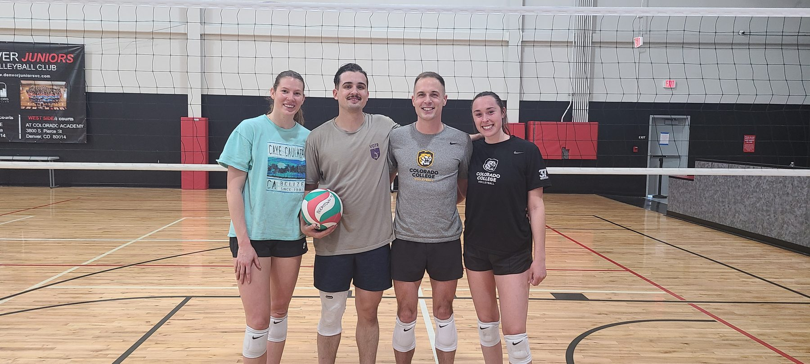

Volleyball Skill Levels
Know your level. Find your game.
Every Boomtown league, tournament, and drop-in night runs on the same skill ladder — from first-timers to former college players. Here’s what each rating actually means on the court, and how to pick the right division.
Volleyball Skill Level & Ranking Summary
These ratings generally describe a player’s proficiency, tactical understanding, and consistency on the court.
It’s important to note that these are guidelines, and slight variations can exist between different leagues. Boomtown and our co-ed league partner Match Point Social play on the same ladder.
Open (Elite / Pro-Am) — Top 1%
The highest level of non-professional competitive play. Players at this level typically have extensive club, collegiate, or even professional experience. They possess exceptional athletic ability, advanced technical skills in all aspects of the game (serving, passing, setting, attacking, blocking, and defense), and a deep understanding of complex strategies and game flow. Consistency is extremely high, and errors are rare — less than a 0.1% error rate.
In short: elite, advanced, highly competitive, collegiate/pro experience, exceptional technique, strategic mastery, minimal errors.
AA (Advanced Competitive) — D1, Top 5%
Players are highly skilled and consistent in all fundamental techniques. They understand and execute advanced offensive and defensive systems (e.g., specific plays, complex serve-receive patterns, disciplined blocking schemes). Communication is strong, and teamwork is well-developed. Errors are occasional, but players can self-correct effectively. Many players at this level have significant college experience — less than a 1% error rate.
In short: highly skilled, consistent fundamentals, advanced strategy, strong communication, competitive, experienced.
A (Intermediate–Advanced) — D1 & D2, Top 20%
Players are generally consistent with fundamental skills (passing, setting, hitting, and serving) but may have occasional inconsistencies or weaknesses in certain areas. They understand basic offensive and defensive concepts (e.g., running a 4-2 or a simple 5-1 offense, reading hitters, and covering hitters), and they are capable of executing various types of serves (e.g., jump float, topspin). Communication is present but may not always be seamless. Many of these players have extensive club experience, or are excellent players with strong fundamentals who no longer have the physical capabilities they once did — less than a 5% error rate.
In short: consistent fundamentals, developing advanced skills, understands basic strategy, capable server, good communication.
BB (Intermediate) — D2 & D3, Top 30%
Players are able to perform most fundamental skills with moderate consistency. They understand basic court positioning and rotations. Setting may be a work in progress, but players can get the ball to a hitter. Hitting approaches are developing, and serving is generally consistent over the net, often with a mix of overhead and underhand serves. Communication is improving, and players are learning to play as a team — less than a 20% error rate.
In short: developing skills, moderate consistency, understands rotations, improving communication, learning team play.
B (Beginner–Intermediate) — D4, Top 50%
Players are still learning and developing fundamental skills. Consistency in passing, setting, and hitting is variable. Players understand the basic rules of the game and can move to cover their court area. Serves are typically underhand or consistent overhead serves. The focus is on getting the ball over the net and keeping it in play. This level is ideal for those new to the sport or looking to improve their basic techniques — less than a 50% error rate.
In short: learning fundamentals, developing consistency, understands basic rules, fun, social.
Rec (Recreational) — D5–8
Players who are interested in playing volleyball at events, or with family and friends, with a focus on enjoyment. Rules are not the main focus, and the ball is simply kept from hitting the ground with whatever body part can make contact. Players serve by trying to get the ball over the net from behind the line, and then chaos ensues. The focus is on the vibes of a social gathering and enjoyment rather than the sport and exercise.
In short: vibes, recreational, developing consistency, understands basic rules, fun, social.
How to choose your division
A quick guide.
To ensure the best experience for everyone, please choose your division based on your current skill and experience:
B (Recreational): Choose this if you’re new to volleyball, want to learn the fundamentals, or prefer casual, social play with minimal competitive pressure. The focus is on fun and participation.
BB (Intermediate): Choose this if you understand basic rules and rotations, can perform the fundamental skills (pass, set, hit, serve) with moderate consistency, and are improving your team play. Great for players who have some experience — such as high school or college — but specialize in only one or two sets of skills.
A (Intermediate–Advanced): Choose this if you’re consistent with most fundamentals, understand basic offensive and defensive strategy, and can execute various serves. You enjoy competition and have high skill consistency. Ideally, you’re able to play all-around, in every position and skill set.
Still unsure? Err on the side of choosing a slightly lower division if you’re between levels — it’s often more fun to dominate and move up than to struggle and move down. A tournament may be a better way to evaluate your skill level with less long-term commitment and, ultimately, with our leagues we dynamically move teams up or down based on their performance. Contact us if you need further guidance!
Want to get better and progress your volleyball skills? Boomtown training runs skills sessions for all levels.
FAQ
Quick answers on levels.
Which division should I choose?
Match your division to your current consistency, not your best-ever highlight. Between two levels? Start lower — you can always move up.
What’s the difference between BB and A?
Consistency and systems. BB runs the fundamentals most of the time; A runs them all the time, plus real offensive and defensive structure, at every position.
Can I move divisions mid-season?
Yes — teams may move up or down based on weekly performance so every night stays competitive.
Don’t miss a night.
Monthly events, tournaments & early registration — straight to your inbox.